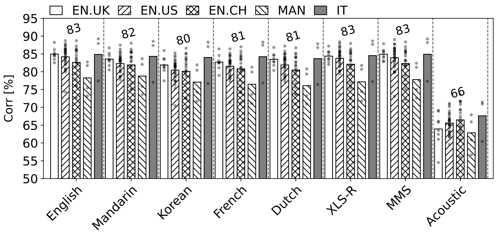

|
Cheol Jun Cho Hi, I am a PhD student in EECS at UC Berkeley. I am co-advised by Dr. Gopala K. Anumanchipalli and Dr. Jack L. Gallant.
I closely collaborate with Chang Lab led by Dr. Edward Chang at UCSF.
Email / CV / Google Scholar |
Publications |
|
Sylber: Syllabic Embedding Representation of Speech from Raw Audio
Cheol Jun Cho, Nicholas Lee, Akshat Gupta, Dhruv Agarwal, Ethan Chen, Alan W Black, Gopala K. Anumanchipalli Preprint paper |
|
|
Coding Speech through Vocal Tract Kinematics
Cheol Jun Cho, Peter Wu, Tejas S. Prabhune, Dhruv Agarwal, Gopala K. Anumanchipalli JSTSP 2025 paper code |
|
|
SD-HuBERT: Sentence-Level Self-Distillation Induces Syllabic Organization in HuBERT
Cheol Jun Cho, Abdelrahman Mohamed, Shang-Wen Li, Alan W Black, Gopala K. Anumanchipalli ICASSP 2024 paper code |
|
|  |
Self-Supervised Models of Speech Infer Universal Articulatory Kinematics
Cheol Jun Cho, Abdelrahman Mohamed, Alan W Black, Gopala K. Anumanchipalli ICASSP 2024 paper |

|
Unconstrained Dysfluency Modeling for Dysfluent Speech Transcription and Detection
Jiachen Lian, Carly Feng, Naasir Farooqi, Steve Li, Anshul Kashyap, Cheol Jun Cho, Peter Wu, Robbie Netzorg, Tingle Li, Gopala K. Anumanchipalli ASRU 2023 paper |
|
|
A variational autoencoder provides novel, data-driven features
that explain functional brain representations in a naturalistic navigation task
Cheol Jun Cho, Tianjiao Zhang, Jack L. Gallant VSS 2023 paper |
|
Neural Latent Aligner: Cross-trial Alignment for Learning Representations of Complex, Naturalistic Neural Data
Cheol Jun Cho, Edward F, Chang, Gopala K. Anumanchipalli ICML 2023 paper |
|
|
Speaker-Independent Acoustic-to-Articulatory Speech Inversion
Peter Wu, Li-Wei Chen, Cheol Jun Cho, Shinji Watanabe, Louis Goldstein, Alan W Black, Gopala K. Anumanchipalli ICASSP 2023 paper |
|
|
Evidence of Vocal Tract Articulation in Self-Supervised Learning of Speech
Cheol Jun Cho, Peter Wu, Abdelrahman Mohamed, Gopala K. Anumanchipalli ICASSP 2023 paper |
|
|
Cross-trial alignment reveals a low-dimensional
cortical manifold of naturalistic speech production
Cheol Jun Cho, Edward F. Chang, Gopala K. Anumanchipalli COSYNE 2023 |
|
|
A bird’s-eye view of brain activity in socially interacting mice through mobile edge computing (MEC)
Jisoo Kim, Chaewoo Kim, Hio-Been Han, Cheol Jun Cho, Wooseob Yeom, Sung Q. Lee, Jee Hyun Choi Science Advances 2020 paper |
|
Template from Jon Barron's website. |